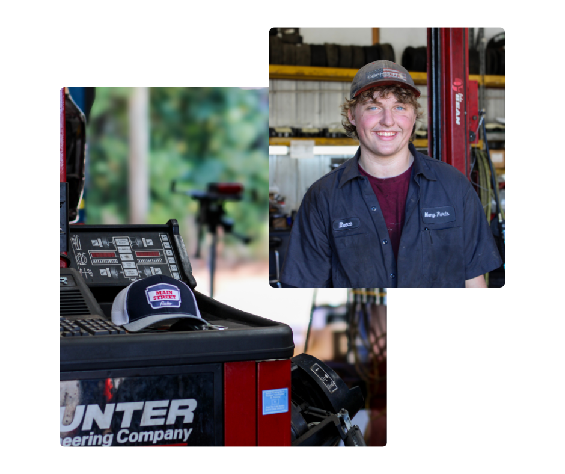
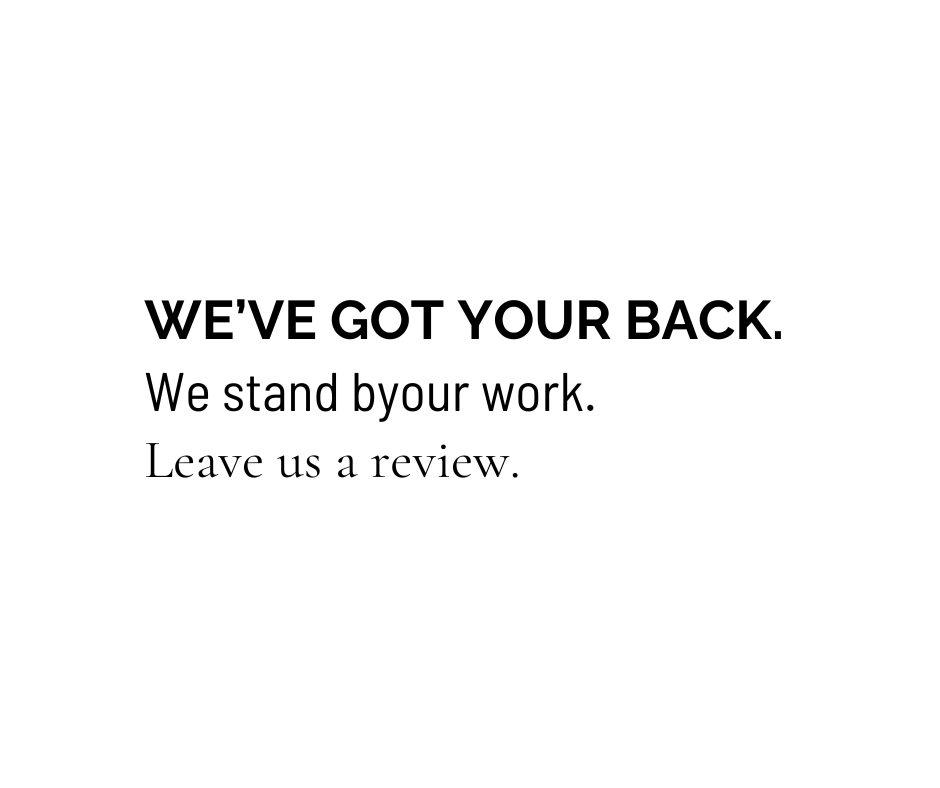
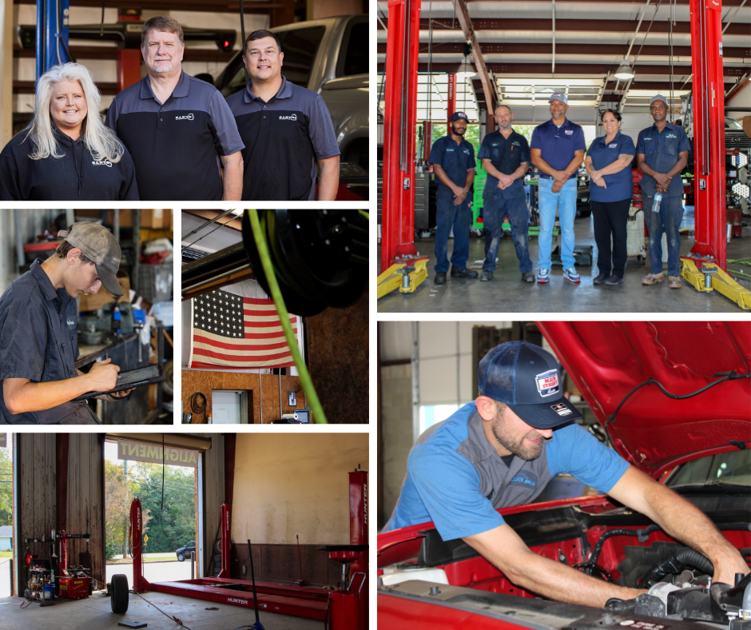
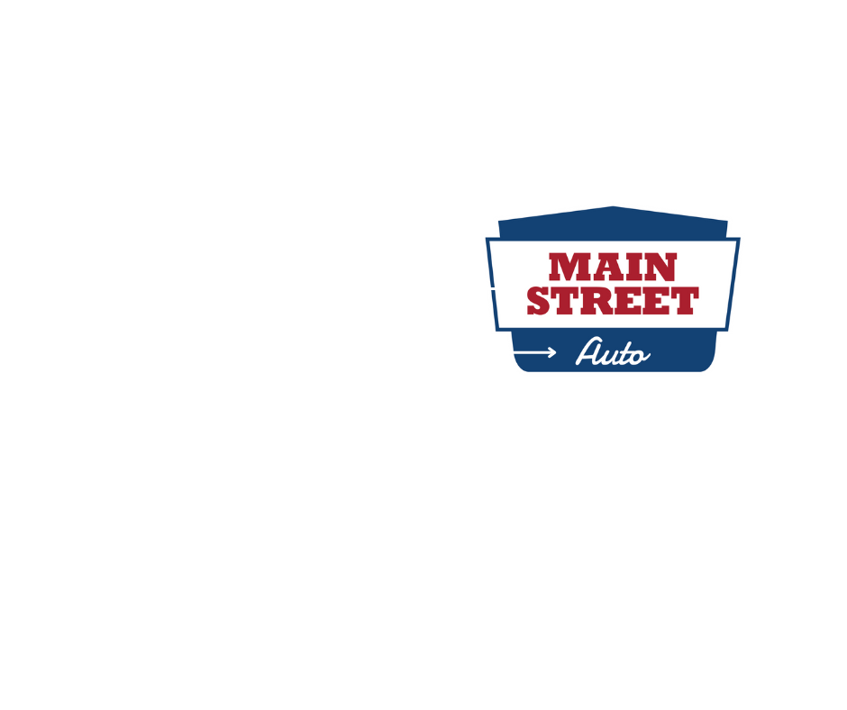
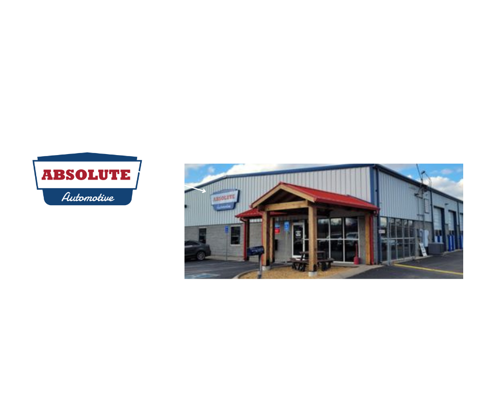
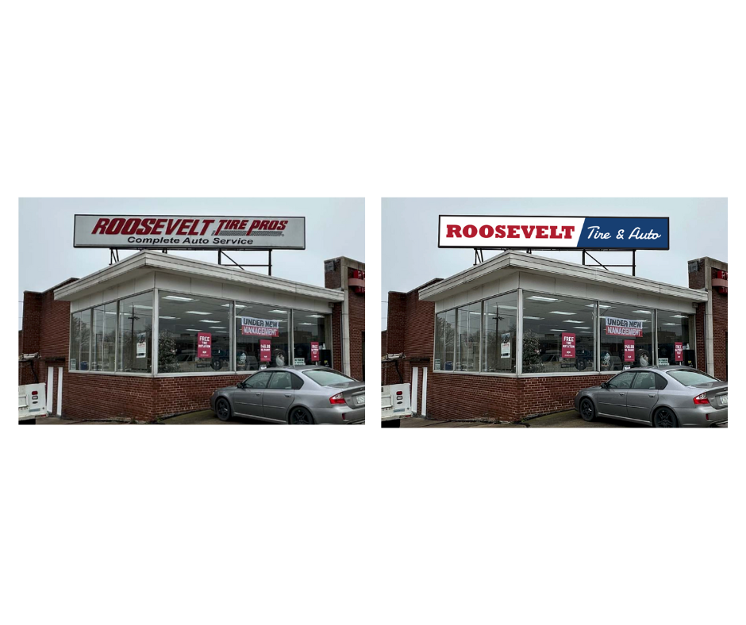
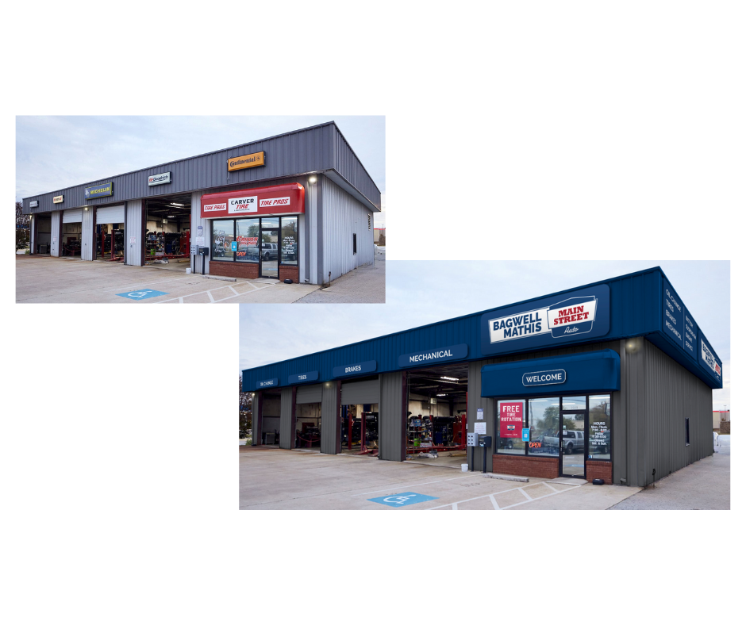
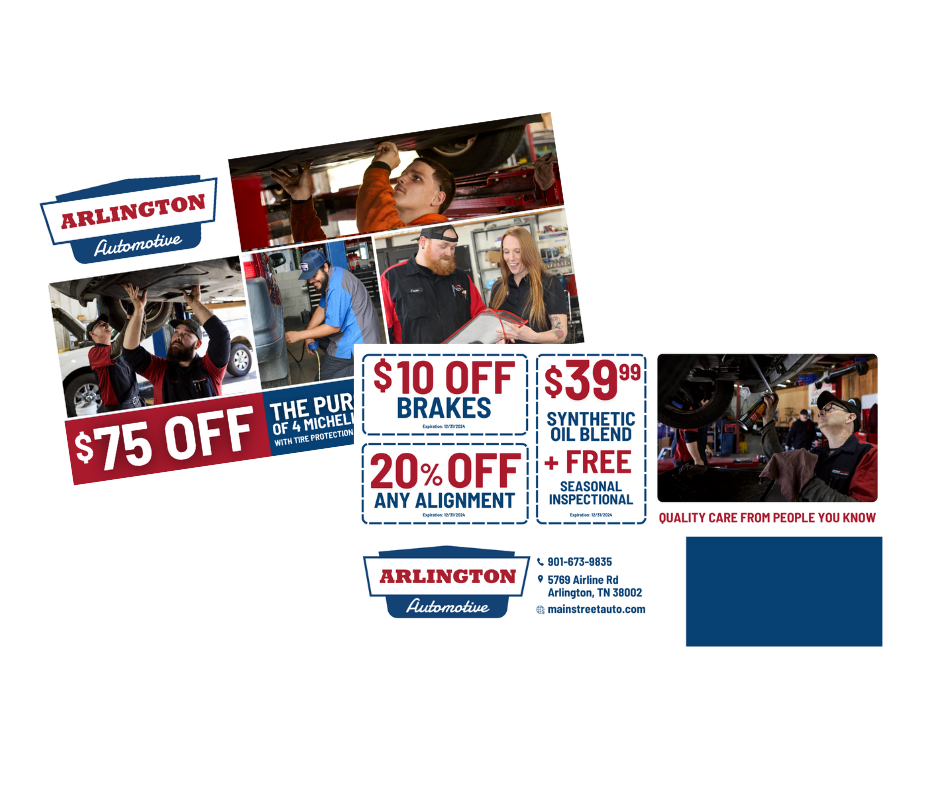
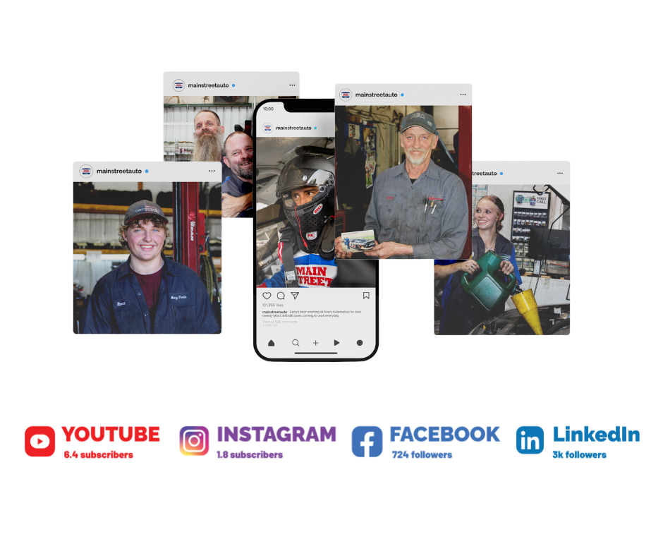
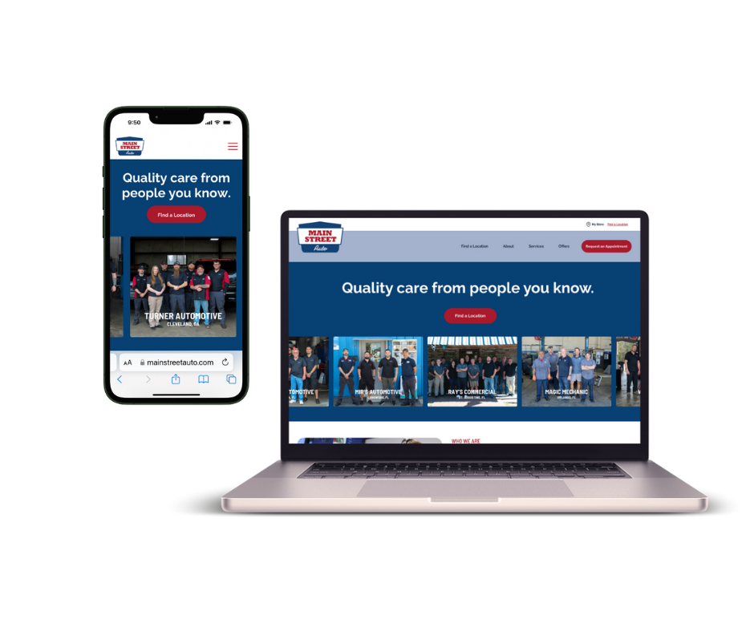

Our Story
Main Street Auto is a 100+ location auto repair network built on small-town values, delivering honest, reliable car care across the Southeast.
Main Street Auto is a 100+ location auto repair network built on small-town values, delivering honest, reliable car care across the Southeast.


Northern Rock
A parent brand focused on purpose-driven strategy and design — built to support brands like Main Street Auto from the ground up.


When developing Main Street Auto’s identity, my goal was to craft a brand voice that felt personal, trustworthy, and deeply rooted in community. The brand needed to balance a professional, multi-location network with the character of a local shop that customers know by name.

Main Street Auto’s tone of voice is friendly, trustworthy, and approachable while maintaining the professionalism of a multi-location network. Crafted to feel personal and easy to understand, breaking down intimidating auto repair talk into something welcoming and clear.

Typography plays a crucial role in expressing the brand’s bold and accessible personality. The type system was built to be clear and readable in high-traffic environments, while maintaining a strong, recognizable presence across print and digital media.
The color palette was designed to embody Main Street Auto’s approachable yet confident identity. Strong, energetic reds paired with clean neutrals create visual impact, while supporting tones add depth and flexibility across various applications.

I identified photography as a major gap in the automotive space—an industry often reliant on generic stock imagery. My goal was to showcase the real people behind the work, capturing authentic moments in our shops to bring the brand’s story to life.
Every photo used in the brand’s materials is ours — ensuring that people and places always feel genuine and true to their community. I learned how to use a professional camera within my first few weeks at Main Street Auto and was constantly on the road after that to visit our shops, capturing 99% of the photos and videos you see.

The Main Street Auto logo is used across all marketing materials to represent the brand as a whole, while each shop retains its individual name to preserve its unique identity and maintain the trust built within its community.
Rockwell Std Extra / Damion



I led the creative rebrand of Main Street Auto’s 100+ locations, directing an outside design team to unify storefronts while preserving local shop identities. This included selecting new paint palettes, overseeing storefront and above-bay signage design, and creating an extended logo for cost-effective, versatile application.

Designing everything from oil change menus to billboards and direct mailers meant translating a complex industry into something approachable. My goal was to remove the intimidation often tied to auto repair, creating simple, clear collateral that empowers customers to make confident decisions.

I created and curated all four of Main Street Auto’s social media channels, building them from the ground up. In under a year, I grew the audience by over 5,000 followers, boosted engagement rates by 300%, and established Instagram as the brand’s leading platform for community connection and marketing reach.

Drove online growth by helping launch the Main Street Auto website—taking online appointment revenue from zero to several million dollars.
